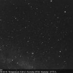
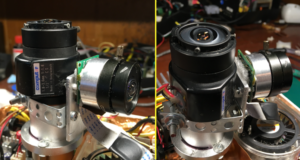
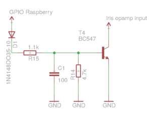
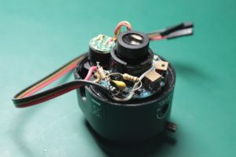
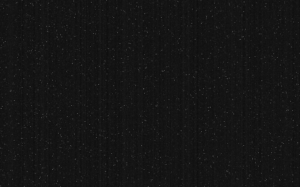

This is the third part of the Allsky cycle.
Please read previous articles to get complete information about this project:
Part 1. Autonomous Allsky camera with Raspberry PI: an overview.
Part 2. Autonomous Allsky camera with Raspberry PI: powering and lightning protection
This time I will show my utility and script for shooting the night sky and processing the images.
Camera module and iris control

In this project, I’m using a popular and cheap QHY5-IIM CMOS camera.
An aluminum ring holds this camera (came with the camera).
Optics – CCTV, “Сomputar 1.8-3.6mm 1.6” with motorized iris. This helps to protect the CMOS sensor in the daytime. Also, we can shoot special calibration images – darks and biases. The calibration process will be described below.
To able to control this iris, I did a little research on lens electronics. The motor is controlled with few operational amplifiers. I found that pulling down one of the opamp inputs causes closing the iris (default state is open). Adding a simple NPN transistor key can control this iris with GPIO signals from the Raspberry.
Diode D1 is used as a protection circuit for the GPIO. C1 is a bypass capacitor that helps to protect whole circuits from possible voltage transients.
{kind=link}

This controlling circuit is connected to the Raspberry GPIO pin 16 (but you can use any free pin). The software is straightforward.
To easily access the GPIO, I’m using the popular bcm2835 library. One of the versions is the in-camera GitHub repository. You need to compile and install this library.
#include <stdio.h> #include <bcm2835.h> #include <unistd.h> #define IRIS_PIN RPI_GPIO_P1_16 int main(int argc, char **argv) { if (argc == 1) { return 1; } if (!bcm2835_init()) { fprintf(stderr, "Failed to initialize bcm2835\n"); return 1; } bcm2835_gpio_fsel(IRIS_PIN, BCM2835_GPIO_FSEL_OUTP); char arg = *argv[1]; switch (arg) { case 'o': printf("IRIS - open\n"); bcm2835_gpio_write(IRIS_PIN, LOW); break; case 'c': printf("IRIS - close\n"); bcm2835_gpio_write(IRIS_PIN, HIGH); break; default: break; } bcm2835_close(); return 0; }
Compilation
gcc -Wall -std=gnu99 main.c -l bcm2835 -lrt -o iris_control
Now we can open and close our iris with commands iris_control 0 and iris_close c, respectively.
QHY5-IIM camera software
The source code of the camera utility is written in C++ and also available on GitHub. This program is doing shots with selected gain/exposure time params. Results are saving as FITS files.
FITS is an open standard defining a digital file format useful for storing, transmitting, and processing scientific and other images. FITS is the most commonly used digital file format in astronomy. Unlike many image formats, FITS is designed specifically for scientific data and hence includes many provisions for describing photometric and spatial calibration information, together with image origin metadata. Image data in the FITS is uncompressed, which is very good for the next processing steps.
The core of this program is a QHYCCD protocol taken from the official repository of the vendor (now this source is removed for some reason). You can find protocol implementation in a qhy5ii.cpp file.
Communication with the camera is made through libusb.
Here is interface claiming and initialization. All we need is a VID and PID of the device.
#define QHY5II_VENDOR_ID 0x1618
#define QHY5II_PRODUCT_ID 0x0921
struct libusb_device_handle *handle = libusb_open_device_with_vid_pid(NULL, QHY5II_VENDOR_ID, QHY5II_PRODUCT_ID);
if (!handle) {
return QHYCCD_ERROR_NO_DEVICE;
}
if( libusb_kernel_driver_active(handle, 0)) {
libusb_detach_kernel_driver(handle, 0);
}
int open_status = libusb_set_configuration(handle, 1);
if (libusb_claim_interface(handle, 0) != 0) {
return QHYCCD_ERROR_INITRESOURCE;
}
Now we got libusb handle and can send commands and data requests to the device using libusb_control_transfer
int libusb_control_transfer ( libusb_device_handle * dev_handle,
uint8_t bmRequestType,
uint8_t bRequest,
uint16_t wValue,
uint16_t wIndex,
unsigned char * data,
uint16_t wLength,
unsigned int timeout
)
All we need to know is a vendor’s “magic” numbers for the commands and options. You can find everything in source files. Check out functions CtrlMsg and EepromRead, for example.
The whole exposure flow is also simple:
- open device
- set resolution
- set gain
- set exposure time
- prepare buffer for the image
- start expositions process
- wait for data
- verify data
- stop expositions process
- close device
You can find functions in my source for each of these steps. The function’s names are corresponding to what they are doing.
The frame buffer is an unsigned char array with the size of the image width * height. This array is holding a 2d matrix of the image, line by line. Every byte represents one pixel with a value from 0 (black) to 255 (white). In this way, data is writing into the FITS file.
Writing and reading FITS files are made using the cfitsio library. I wrote a little wrapper C++ class FitsHandler. This class is holding an image buffer and can write this buffer to the new FITS file and load it from some existing file. Also, can be set FITS header data.
Opening existing and creating new FITS files:
fitsfile *fhandle;
int status = 0;
// opening existing FITS
fits_open_file(&fhandle, "old_image.fits", READONLY, &status);
///
// creating new FITS
fits_create_file(&fhandle, "new_image.fits", &status);
if (status != 0) {
// error
}
Important note!
Never try to call fits_create_file() on existing file. This function doesn’t support overwriting, and errors will be raised.
Existing file must be removed (with unlink(), for example) before calling fits_create_file().
Getting image size and loading image data as uint16_t array from the FITS file:
int status = 0;
int bitpix;
long anaxes[2] = { 1, 1 };
fits_get_img_size(fhandle, 2, anaxes, &status);
int image_width = anaxes[0];
int image_height = anaxes[1];
fits_get_img_type(fhandle, &bitpix, &status);
if (status != 0) {
/// error
}
long firstpix[2] = { 1, 1 };
size_t numpix = image_width * image_height;
uint16_t *imagebuf = new uint16_t(numpix);
fits_read_pix(fhandle, TUSHORT, firstpix, numpix, NULL, imagebuf->Raw(), NULL, &status);
/// image processing
delete[] imagebuf;
TUSHORT specifies the data type of our buffer, possible values are:
TBYTE unsigned char TSBYTE signed char TSHORT signed short TUSHORT unsigned short TINT signed int TUINT unsigned int TLONG signed long TLONGLONG signed 8-byte integer TULONG unsigned long TFLOAT float TDOUBLE double
The correct type of data can be chosen by bitpix value, which was initialized with fits_get_img_type().
Writing image buffer to the FITS file:
unsigned int naxis = 2;
long naxes[2] = { image_width, image_height };
long fpx[2] = { 1L, 1L };
int status = 0;
fits_create_img(fhandle, bitpixel, naxis, naxes, &status);
fits_write_pix(fhandle, TUSHORT, fpx, image_width * image_height, imagebuf, &status);
imagebuf can be filled with data from the actual device.
Always check status. Non-zero values mean that something goes wrong.
An additional and handy feature of this class is the subtraction of the images. This method subtracts one image matrix from another. Simple arithmetic method.
for (long i = 0; i < imgwidth * imgheight; ++i) {
imagebuf_a[i] -= imagebuf_b[i];
}
Both image buffers must be the same size.
By subtracting frames, we can remove CMOS matrix noise and amplifier noise.
This can be done by using special calibration files – dark and bias.
This is a regular FITS file shooted with this QHY utility.
The dark file is shooting with closed iris and with long exposure and big gain, just like a normal exposition.
The resulting image contains only hot pixels and matrix noise on dark background.
Typical dark:

{kind=link}
Bias is the same, but the only gain is high. Exposure is the fastest as possible – 1ms, for example.
The resulting image contains only the noise of the amplifier (and ADC probably).
{kind=link}
By subtracting the dark/bias matrix, we can remove all these pixel values and get a clearer image of the sky.
It’s always a good idea to subtract the bias from the image itself and the dark image.
Fits header is a simple key-value pair in ASCII (usually). Typical content is file creation date, object, coordinates, conditions, and additional technical information.
FITS header data row can be written with function:
int fits_write_key(fitsfile *fptr, int datatype, char *keyname, DTYPE *value, char *comment, int *status)
Writing FITS creation date and time (in a standardized way), for example:
#include <time.h> #include <string.h> int status = 0; char time_now[25]; time_t lt = time(NULL); struct tm *utc_tm = gmtime(<); strftime(time_now, 25, "%Y-%m-%dT%H:%M:%S", utc_tm); fits_write_key(fhandle, TSTRING, "DATE", time_now, "Fits creation date, UTC", &status);
Calibration files and fits header data is passed to the QHY program as arguments. Please refer main.cpp to see how all this logic works.
Usage of the QHY utility (30 is gain and 30000 is exposure time in ms):
iris_control c qhy_camera -m qhy5ii -e 1 -g 30 -o bias.fits qhy_camera -m qhy5ii -e 30000 -g 30 -o dark.fits iris_control o qhy_camera -m qhy5ii -e 30000 -g 30 -o image.fits -b bias.fits -k dark.fits -x fits_header.dat
Example of the fits_header.dat:
CREATOR Allsky camera INSTRUME QHY5-IIM EXPTIME 30.0 TEMPERAT 16.07 HUMIDITY 84.41 SKYTEMP -2.12 OBSERVAT Crimean astrophysical observatory SITENAME Nauchniy, Crimea SITELAT 44.727007 SITELONG 34.013173 SITEELEV 600
The left column is a key, and the right is a value.
Let’s check our resulting fits:
$ hexdump -e '80/1 "%_p" "\n"' image.fits | head -n22 SIMPLE = T / file does conform to FITS standard BITPIX = 8 / number of bits per data pixel NAXIS = 2 / number of data axes NAXIS1 = 1280 / length of data axis 1 NAXIS2 = 960 / length of data axis 2 EXTEND = T / FITS dataset may contain extensions COMMENT FITS (Flexible Image Transport System) format is defined in 'Astronomy COMMENT and Astrophysics', volume 376, page 359; bibcode: 2001A&A...376..359H DATE = '2018-06-06T22:34:57' / Fits creation date, UTC CREATOR = 'Allsky camera' INSTRUME= 'QHY5-IIM' EXPTIME = '30.0 ' TEMPERAT= '16.07 ' HUMIDITY= '84.41 ' SKYTEMP = '-2.12 ' OBSERVAT= 'Crimean astrophysical observatory' SITENAME= 'Nauchniy, Crimea' SITELAT = '44.727007' SITELONG= '34.013173' SITEELEV= '600 ' END
Below this header is the binary data of the image.
In the next article, I will describe astrocamera script where most of the camera logic is done.
Thanks for reading!
1 thought on “Autonomous Allsky camera with Raspberry PI. Part 3: shooting night sky in FITS using QHY5-IIM camera”